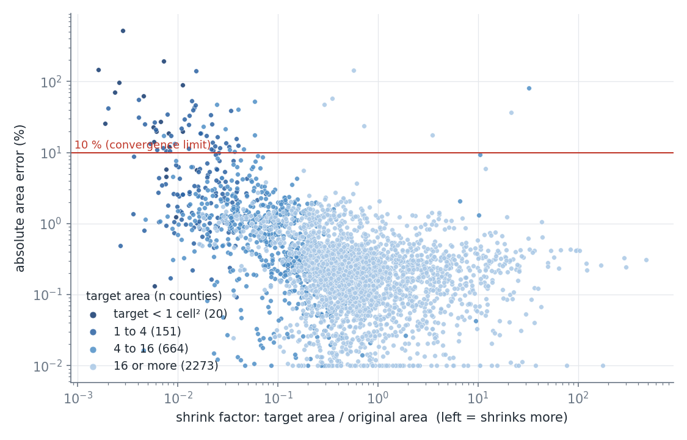
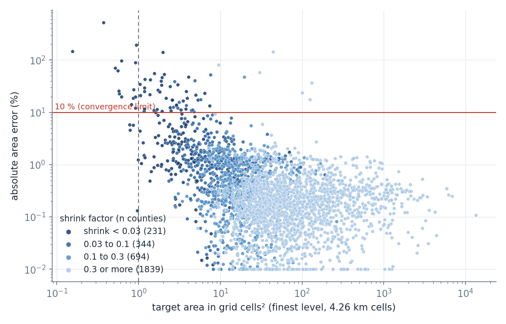
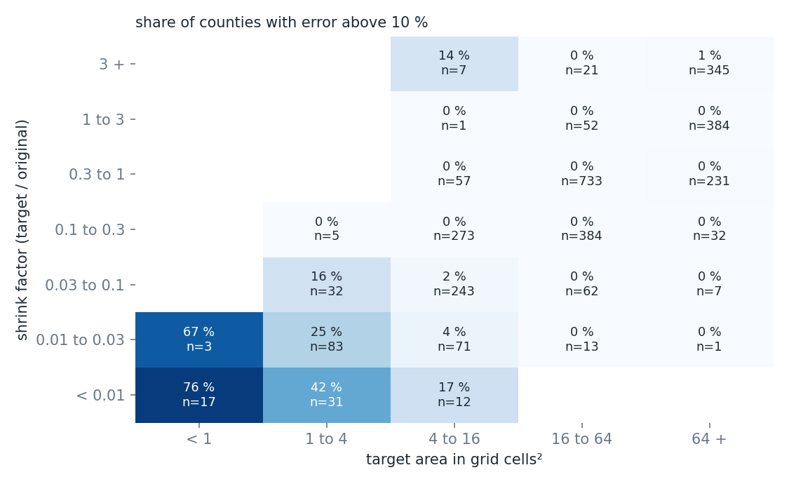
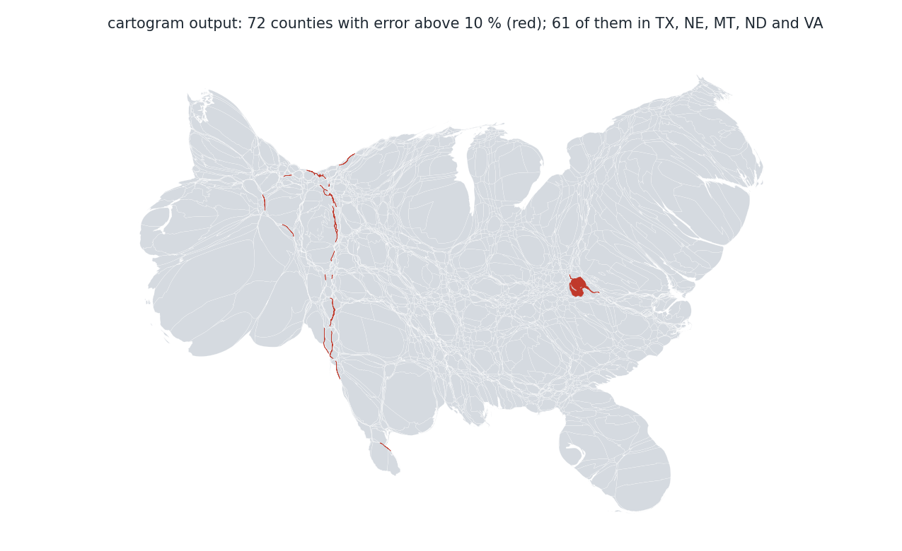

72 of 3,108 counties end above 10 % area error. The error depends on the shrink factor (target over original area) and on the target size in grid cells together. No county that shrinks by less than 10 times, and almost none with a target of 16 cells or more, is above 10 %. The failing counties are thin strips along the Great Plains and a cluster in Virginia.
relation.py <output dir> runs the morph and draws the four figures. The run ends stalled with a mean error of 1.52 %, a median of 0.25 % and a maximum of 523 %.

Absolute area error against the shrink factor (target area over original area), colored by the target area in grid cells. The errors above 10 % are at shrink factors below 0.1, and the darkest points (targets below four cells) dominate them.

Absolute area error against the target area in grid cells, colored by the shrink factor. The errors rise below about 10 cells and are above 10 % for targets under four cells with a shrink below 0.1. Targets of 16 cells or more are at 0.1 to 1 % whatever the shrink.

Share of counties above 10 % error by shrink factor and target size. The failures sit in one corner: shrink below 0.1 and target below 16 cells; the corner is darkest at shrink below 0.01 and target below one cell (76 %).

The cartogram output with the 72 counties above 10 % error in red. Most are thin strips along the Great Plains (TX 22, NE 18, MT 7, ND 7) and a cluster in Virginia (7), where the independent cities enlarge and their surrounding counties shrink.